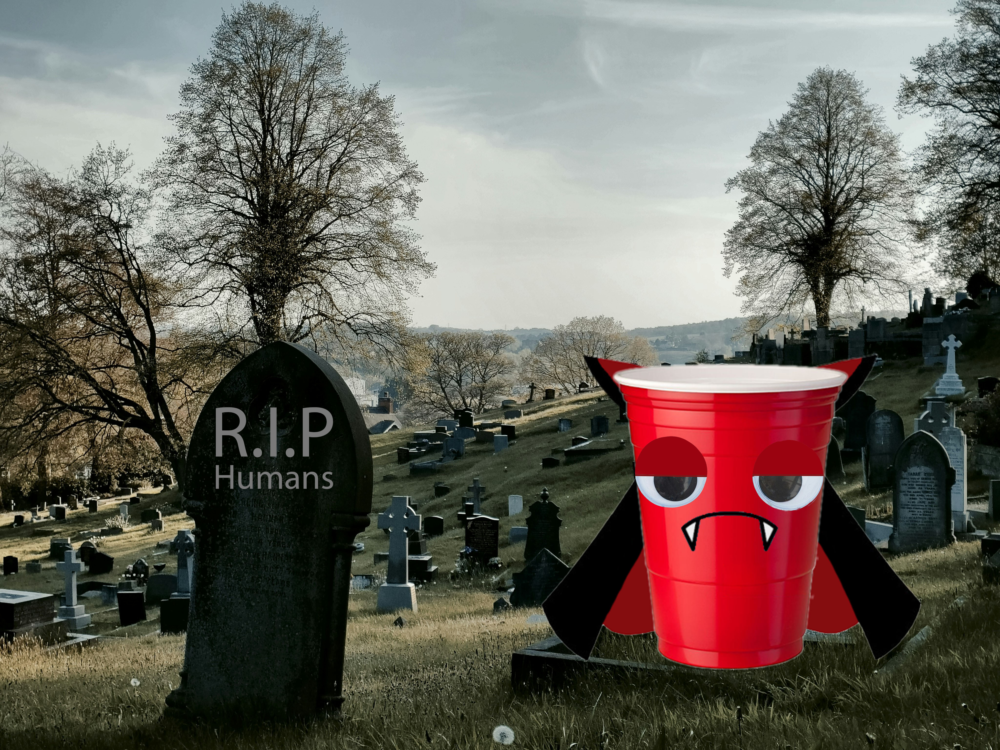

For this assignment I decided to choose the enviornmental issue of pollution, mainly focusing on the issue of microplastics. The first collage I made was the bottle in destress, I really hate it when I see people treating the space that they're in as a trash, they neglect to remember that the out doors is a public space that they share with other people. The train tracks are especially hazardus because it can cause track fires and delays. I decided to add a face to this waterbottle to personify this object that people throw away without a second thought. I wanted to make whoever looks at this think twice about the lifespan of the things they purchase and how it would be disposed of. Maybe personifying a bottle in destress will do the trick, as I hope no one would carelessly throw a person onto the tracks without a second thought.
The second one, Microplastics Live Forever; it was around the time of Halloween and I was thinking about how I can represent eternity and vampires were the only thing I could think of. The redness of the plastic cup, in contrast with the nutral expression on its face work together to embody the indifference as it is just something that exsists at the hand of human creation. A creation that will outlive them, indifferently contributing to their decline and the decline of the enviornment.
HOME